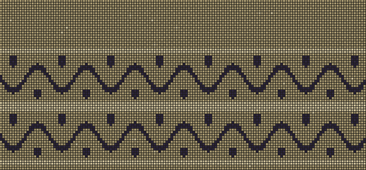

The same over, the same under, in the band and out of it. Nothing was added. A few threads changed colour, and the cloth that was cloth is also a vine.
Fragment of a Sleeve, 3rd–4th century, wool and linen. The Metropolitan Museum.
Back.